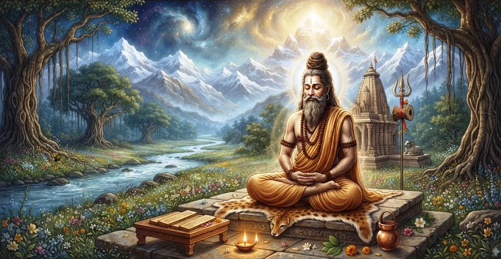

Description of the Brahmin Vamadeva
The eleventh chapter of the Kailasa Samhita narrates the extraordinary life, awakening, and non-dual realization of the enlightened Brahmin Vamadeva.
Sage Vamadeva stands as a supreme example of a soul who grasped the ultimate identity with Lord Shiva right from his early existence.
His inspiring account illustrates how spiritual knowledge dissolves all barriers between individual consciousness and cosmic reality.
Chapter 11 Highlights
In-Womb Awakening
Vamadeva attains supreme enlightenment and remembers past lives while still in the womb.
Vision of Oneness
Experiences direct unity with Brahman, seeing Lord Shiva as the sole underlying reality.
Proclamation of Truth
Declares his identity with ancient sages, gods, and cosmic forces without ego.
Total Freedom
Demonstrates Jivanmukti—liberation while living—free from all worldly fetters.
Vedic Precedent
Echoes profound Upanishadic declarations such as "Aham Brahmasmi" through a Shaiva lens.
Gateway to Renunciation
Sets the spiritual stage for exploring the formal path of Sannyasa in the next chapter.
Core Topics in This Chapter
The Extraordinary Birth of Vamadeva
Brahmin Vamadeva was born with exceptional spiritual aptitude, untouched by the veil of worldly delusion that affects ordinary mortals.
Even before emerging into the external world, his consciousness was firmly anchored in the supreme truth of Lord Shiva.
Enlightenment Within the Womb
While confined in the womb, Vamadeva experienced deep introspection, meditating upon the Pranava and the transcendent nature of Brahman.
He resolved the knot of ignorance, realizing that his true essence was pure, immortal consciousness rather than a physical body.
Realization of Identity with Lord Shiva
Vamadeva perceived that Lord Mahadeva pervades the entire universe as both the material cause and the efficient cause.
By recognizing this non-dual reality, he transcended all duality, experiencing supreme peace and unbroken bliss.
Vamadeva's Universal Proclamation
Overwhelmed by divine realization, Vamadeva declared his oneness with all cosmic entities, echoing ancient Vedic revelations.
He proclaimed that he had attained the status of Manu, Surya, and realized sages through his identity with Shiva.
The State of a Living Liberated Soul
The chapter describes how Vamadeva lived as a Jivanmukta—free from ego, desires, and karmic bondage while moving in the world.
Though possessing a physical form, his mind remained perpetually merged in the ocean of supreme consciousness.
The Merits of Reading Vamadeva's Tale
Sage Suta concludes by stating that listening to the account of Vamadeva purifies the mind and destroys worldly illusions.
Seekers gain inspiration to look beyond fleeting sensory pleasures and seek the immortal truth of Lord Shiva.
Transition to Chapter 12
Having illustrated the pinnacle of non-dual realization through Vamadeva, Sage Suta introduces Chapter 12, 'The Procedure of Sannyasa'.
Chapter 12 provides practical guidelines for formal renunciation, guiding dedicated seekers on how to formally step out of worldly life.
Key Teachings of Chapter 11
Supreme Awakening
True knowledge can dawn at any stage of life when the mind is ripe and pure.
Soul-Shiva Unity
The individual soul (Jiva) and Supreme Lord Shiva are fundamentally non-different.
Transcending Ego
Realization dissolves personal ego, revealing universal presence in all things.
Living Liberation
Jivanmukti is attainable through direct experiential wisdom of the divine.
Vedic Harmony
Puranic narratives fully align with Upanishadic truths of non-dual consciousness.
Call to Renunciation
Understanding such greatness inspires seekers to renounce worldly illusions for truth.
Spiritual Reflection
The story of Vamadeva teaches us that spiritual enlightenment is not bound by chronological age or external status. When the inner eye opens, the entire universe is recognized as an expression of Lord Shiva, bringing permanent freedom from sorrow.
Living the Message of Chapter 11
Contemplate your true divine nature daily, looking beyond temporary bodily identities.
Cultivate inner silence and meditative awareness to quiet the turbulence of the mind.
Recognize the presence of Lord Shiva in all beings, fostering universal respect and love.
Key Spiritual Concepts
The exalted spiritual trajectory and realization attained by Sage Vamadeva.
The rare awakening of supreme self-knowledge while still situated within the womb.
The non-dual vision perceiving no distinction between individual soul and Supreme Shiva.
The liberated state experienced while living in a physical body, free from bondage.
The expansive feeling of being one with the entire universe and all living entities.
The spiritual inspiration leading a seeker toward formal renunciation and monastic life.
Chapter Summary
Kailasa Samhita Chapter 11 presents the inspiring account of the Brahmin Vamadeva. Detailing his in-womb enlightenment, profound non-dual realization, and proclamation of identity with Lord Shiva, this chapter exemplifies the ultimate goal of spiritual practice. Vamadeva's life serves as a magnificent bridge to Chapter 12, 'The Procedure of Sannyasa', inspiring seekers to pursue absolute freedom and renunciation.
Frequently Asked Questions
1. What is the primary subject of Kailasa Samhita Chapter 11?
Chapter 11 details the life, spiritual awakening, and non-dual realization of the Brahmin Vamadeva, showcasing how an individual merges fully with Lord Shiva's consciousness.
2. Who is Vamadeva in the context of this chapter?
Vamadeva is an exemplary Brahmin sage who attained supreme enlightenment right from the womb, experiencing the direct identity of his soul with Brahman/Shiva.
3. What profound realization did Vamadeva express?
Vamadeva proclaimed his identity with all forms of creation, famously realizing that he had lived as Manu, Surya, and various enlightened beings through supreme oneness.
4. How does Vamadeva's story connect to previous chapters?
Vamadeva's story serves as a living proof of the Pranava wisdom and mental worship described in preceding chapters, demonstrating liberation in action.
5. What are the spiritual fruits of reading about Brahmin Vamadeva?
Reading or hearing this account dispels ignorance, destroys worldly attachments, and inspires seekers to pursue direct experiential realization of Lord Shiva.
6. How does Chapter 11 transition into Chapter 12?
After presenting Vamadeva's realization of ultimate freedom, the text transitions in Chapter 12 to outline 'The Procedure of Sannyasa', detailing the formal path of renunciation.
“When the inner veil of ignorance is torn asunder, the soul recognizes its eternal oneness with Lord Shiva, shining as the light of the entire universe.”
Continue Through Kailasa Samhita
Chapter 11 details Description of the Brahmin Vamadeva. Continue to Chapter 12, The Procedure of Sannyasa.